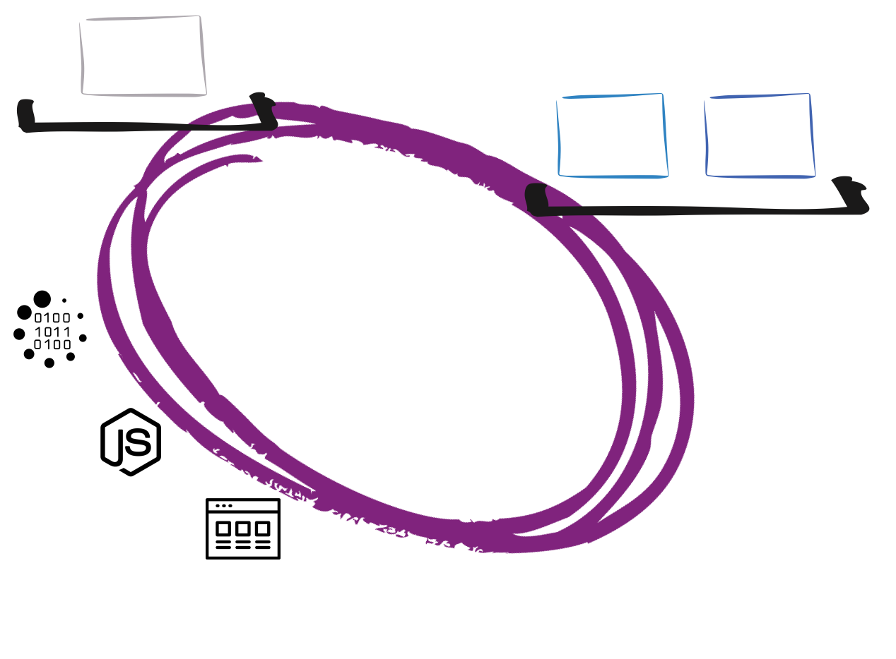
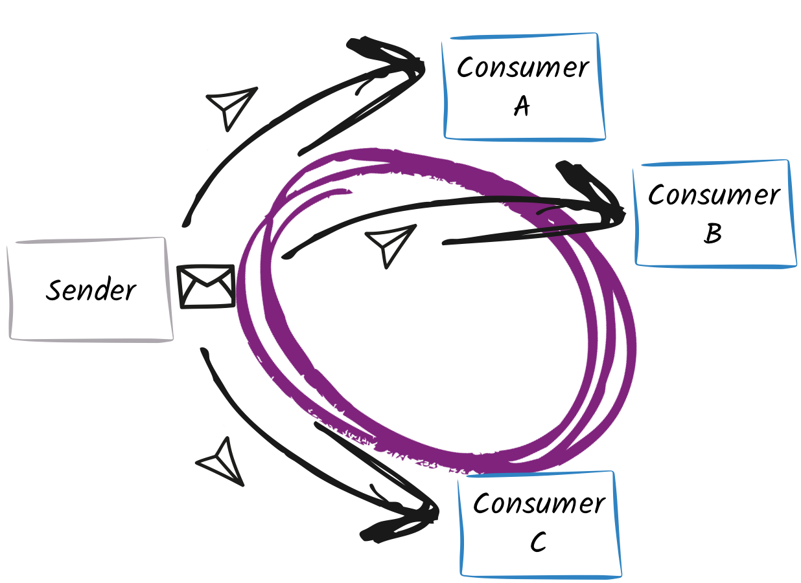
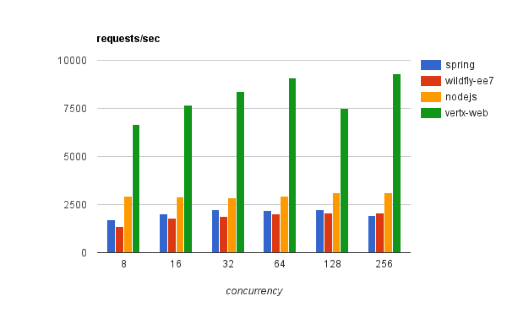

Reactive distributed systems with Vert.x
Clement Escoffier
Red Hat
Vert.x is a toolkit to build distributed and reactive systems on top of the JVM using an asynchronous non-blocking development model.
Toolkit
- Vert.x is a plain boring jar
- Vert.x components are plain boring jars
- Your application depends on this set of jars (classpath, fat-jar, ...)
Distributed
“You know you have a distributed system when the crash of a computer you've never heards of stops you from getting any work done.” (Leslie Lamport)
Reactive Systems
- Responsive - they respond in an acceptable time
- Elastic - they scale up and down
- Resilient - they are designed to handle failures gracefully
- Asynchronous - they interact using async messages
Reactive Systems != Reactive Programming
Reactive Systems + Reactive Programming
Polyglot
Vert.x applications can be developed using
- Java
- Groovy
- Ruby (JRuby)
- JavaScript (Nashorn)
- Ceylon
- Scala
- Kotlin
Vert.x
A toolkit to build distributed systems
Vert.x
Build distributed systems:
- Do not hide the complexity
- Failure as first-class citizen
- Provide the building blocks, not an all-in-one solution
What does Vert.x provide ?
- TCP, UDP, HTTP 1 & 2 servers and clients
- (non-blocking) DNS client
- Clustering
- Event bus (messaging)
- Distributed data structures
- (built-in) Load-balancing
- (built-in) Fail-over
- Pluggable service discovery, circuit-breaker
- Metrics, Shell
Reactive
Build reactive distributed systems:
- Responsive - fast, is able to handle a large number of events / connections
- Elastic - scale up and down by just starting and stopping nodes, round-robin
- Resilient - failure as first-class citizen, fail-over
- Asynchronous message-passing - asynchronous and non-blocking development model
Asynchronous & non-blocking

Asynchronous & non-blocking
// Synchronous development model
X x = doSomething(a, b);
// Asynchronous development model - callback variant
doSomething(a, b, // Params
ar -> { // Last param is a Handler<AsyncResult<X>>
// Result handler
});
// Asynchronous development model - future variant
Future<X> future = doSomething(a, b);
future.setHandler(
ar -> { /* Completion handler */ });
Request - Reply interactions
HTTP, TCP, RPC...
Vert.x Hello World
Vertx vertx = Vertx.vertx();
vertx.createHttpServer()
.requestHandler(request -> {
// Handler receiving requests
request.response().end("World !");
})
.listen(8080, ar -> {
// Handler receiving start sequence completion (AsyncResult)
if (ar.succeeded()) {
System.out.println("Server started on port "
+ ar.result().actualPort());
} else {
ar.cause().printStackTrace();
}
});
Vert.x Hello World
Event loops

Vert.x Async HTTP Client
HttpClient client = vertx.createHttpClient(
new HttpClientOptions()
.setDefaultHost("localhost")
.setDefaultPort(8081));
client.getNow("/", response -> {
// Handler receiving the response
// Get the content
response.bodyHandler(buffer -> {
// Handler to read the content
});
});
Chained HTTP requests
Interacting with blocking systems
Messaging
The eventbus - the spine of Vert.x applications...
The event bus
The event bus is the nervous system of vert.x:
- Allows different components to communicate regardless
- the implementation language and their location
- whether they run on vert.x or not (using bridges)
- Address: Messages are sent to an address
- Handler: Messages are received by
Handlers.
Point to Point
vertx.eventBus().send("address", "message");
vertx.eventBus().consumer("address", message -> {});
Publish / Subscribe
vertx.eventBus().publish("address", "message");
vertx.eventBus().consumer("address", message -> {});
Request / Response
vertx.eventBus().send("address", "message", reply -> {});
vertx.eventBus().consumer("address",
message -> { message.reply("response"); });
From local to clustered
Vert.x instances form a cluster
Vertx.clusteredVertx(new VertxOptions(), result -> {
if (result.failed()) {
System.err.println("Cannot create a clustered vert.x : "
+ result.cause());
} else {
Vertx vertx = result.result();
// ...
}
});The event bus is distributed on all the cluster members
Distributed event bus
Almost anything can send and receive messages
Distributed event bus
Let's have a java (Vert.x) app, and a node app sending data just here:
Distributed event bus

Eventbus clients and bridges
Bridges
- SockJS: browser, node.js
- TCP: languages / systems able to open a TCP socket
- Stomp
- AMQP
- Camel
Clients:
- Go, C#, C, Python...
Reliability patterns
Don't be fool, be prepared to fail
Reliability
It's not about being bug-free or bullet proof,
we a humans.
It's about being prepared to fail,
and handling these failures.
Managing failures
Distributed communication may fail
AsyncResult lets us manage these failures:
doSomethingAsync(param1, param2,
ar -> {
if (ar.failed()) {
System.out.println("D'oh, it has failed !");
} else {
System.out.println("Everything fine ! ");
}
});Managing failures
Adding timeouts
vertx.eventbus().send(..., ...,
new DeliveryOptions().setSendTimeout(1000),
reply -> {
if (reply.failed()) {
System.out.println("D'oh, he did not reply to me !");
} else {
System.out.println("Got a mail " + reply.result().body());
}
});Circuit Breaker

Circuit Breaker
cb.executeWithFallback(future -> {
// Async operation
client.get("/", response -> {
response.bodyHandler(buffer -> {
future.complete("Ola " + buffer.toString());
});
})
.exceptionHandler(future::fail)
.end();
},
// Fallback
t -> "Sorry... " + t.getMessage() + " (" + cb.state() + ")"
)
// Handler called when the operation has completed
.setHandler(content -> /* ... */);
Circuit Breaker
Verticle Fail-Over
- Verticles are chunk of code that get deployed and run by Vert.x
- Verticles can deploy other verticles
- Verticles can be written in Java, Groovy, JavaScript, Ruby, Ceylon...

Verticle Fail-Over
In High-Availability mode, verticles deployed on a node that crashes are redeployed on a sane node of the cluster.

Verticle Fail-Over
Elasticity patterns
Be prepared to be famous
Elasticity patterns

Balancing the load
When several consumers listen to the same address, Vert.x dispatches the sent messages using a round robin.
So, to improve the scalability, just spawn a new node!
Balancing the load
Balancing the load
Scaling HTTP

What about performances ?
Because we do it well, and we do it fast
Techempower - fortune
Request -> JDBC (query) -> Template engine -> Response
This is not the end();
But the first step on the Vert.x path